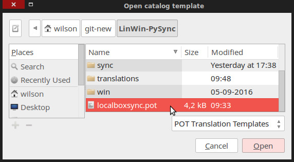
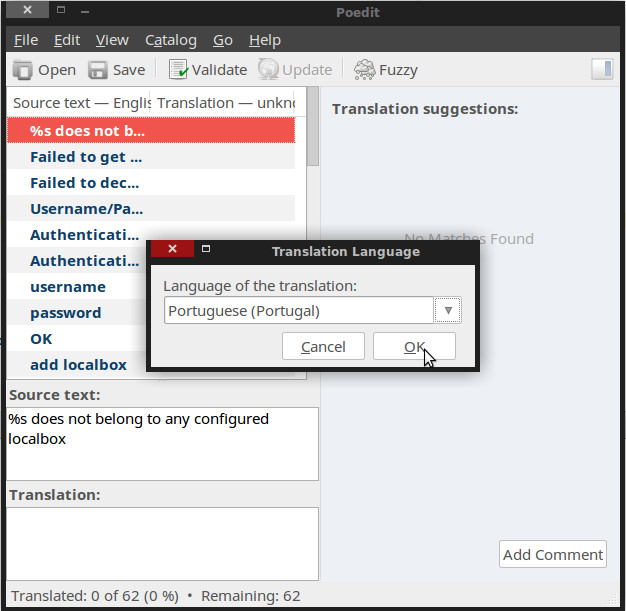

Contributions¶
Start Developing¶
# get the code
git clone https://github.com/2EK/LinWin-PySync.git
# switch to the develop branch
git checkout develop
# compile the translations
make translations
Solving a bug? Create your branch with (replace <ISSUE_NUMBER> with the appropriate number):
git flow bugfix start LOXGUI-<ISSUE_NUMBER>
Creating a new feature ? Create your branch with (replace <ISSUE_NUMBER> with the appropriate number):
git flow feature start LOXGUI-<ISSUE_NUMBER>
Documentation¶
Want to contribute your knowledge to the cause? Cool.
# get the code
git clone https://github.com/2EK/LinWin-PySync.git
mkdir LinWin-PySync-docs
cd LinWin-PySync-docs
# clone the repo into a dir called html:
git clone https://github.com/2EK/LinWin-PySync.git html
cd html
#
git checkout gh-pages
git symbolic-ref HEAD refs/heads/gh-pages
rm .git/index
git clean -fdx
# compile the documentation as HTML
cd ../LinWin-PySync
make html
Reference: https://daler.github.io/sphinxdoc-test/includeme.html
Translations¶
Creating a new translation¶
Install Poedit
sudo apt-get install poedit
Create POT file:
make translatefile
Create translation from POT:

Open POT:
Choose language:
Translate the text and save PO in ./translations:

Compile to MO:
make translations
Updating a translation¶
Lets contemplate the scenario where the developers added more strings / messages to the application. Now we need to make a translation for these new strings.
Create POT file again:
make translatefile
Open your previous PO file (located in ./translations) and update it from the new POT.

The new strings are added to the PO file. Translate them, save and compile:
make translations
Adding translation to the application¶
So your PO file is ready to use, but how?
Add the name of the language in upper case (it should match [A-Z_]+) as the key of LANGUAGES and use the name of
the PO file (without the extension) as the value:

After restarting the application the new language is displayed as a choice: